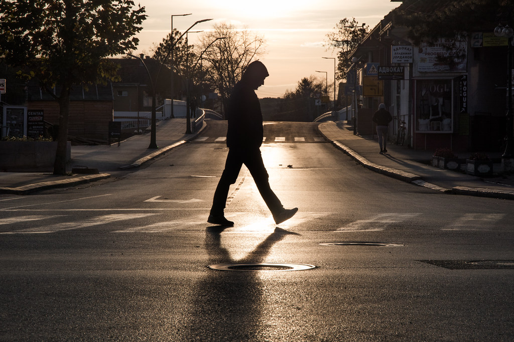

Treyten is a very quiet guy. He doesn't trust many people after his father was killed in front of him 10 years prior to our story. Trey does happen to slouch a lot and keep an "I don't care" attitude a lot of the time. Since his father's death, he was changed, he doesn't laugh or smile much and deep inside he has the burning desire for vengeance on those who took his father from him.
